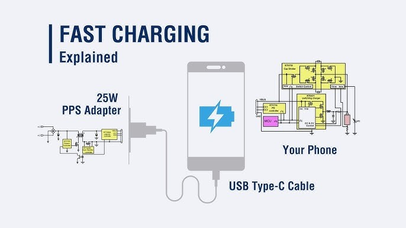
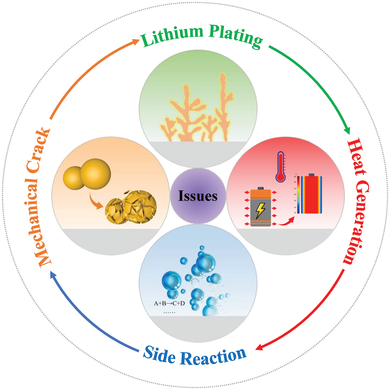
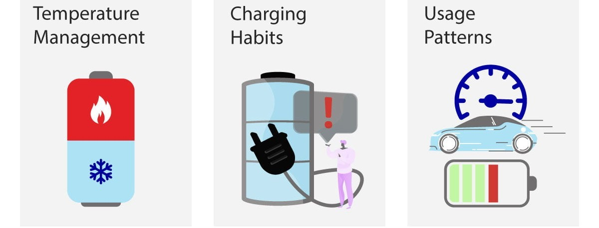
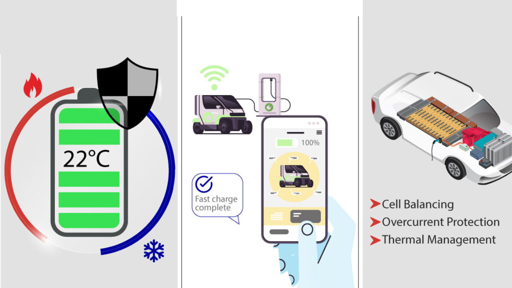
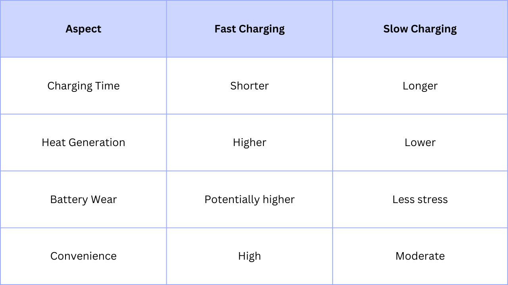

Fast charging has become a ubiquitous feature in modern devices, from smartphones to electric vehicles (EVs), offering the convenience of quickly replenishing battery power. However, concerns persist about its potential impact on long-term battery health.
This newsletter explores the relationship between fast charging and battery lifespan, providing insights and tips to help you strike the right balance between speed and longevity.
What is Fast Charging?
Fast charging technology minimizes the time required to power a device's battery by boosting the voltage of the current supplied. This allows devices to charge much faster than with a standard power adapter. Fast charging is now standard for modern smartphones. In EVs, fast charging, also known as rapid charging, offers a significantly faster and safer way to charge compared to a standard socket.

The Impact of Fast Charging on Battery Health
General Findings:
- EVs: A study of 13,000 Teslas found no statistically significant difference in range degradation between vehicles that fast-charged more than 70% of the time and those that did so less than 30% of the time. All Tesla batteries, regardless of charging habits, showed range degradation over time, which is normal for lithium-ion batteries.
- Smartphones: Fast charging does not necessarily damage a phone's battery. Manufacturers have implemented safeguards to prevent excess current and overheating, which can affect battery lifespan.
Potential Concerns:
- Heat Generation: Fast charging can generate heat, which may accelerate battery degradation over time. High temperatures can cause chemical reactions within the battery, leading to the deterioration of its components.
- Battery Stress: High voltage and current in rapid charging can subject EV batteries to increased strain, potentially wearing them down quicker than fast charging.
- State of Charge (SoC): Fast charging often results in charging the battery to higher SoC levels in a shorter period, which can put excessive stress on the battery and lead to faster degradation.

Tips for Preserving Battery Life
Whether you're charging your smartphone or EV, consider these tips to maximize battery lifespan:
- Avoid Extreme Temperatures: Keep your devices away from high temperatures and direct sunlight. Charge your phone in a cool, well-ventilated environment. Excessive heat generated during rapid charging can be harmful to the battery. High ambient temperatures or rapid charging conditions in hot climates can contribute to accelerated battery degradation.
- Maintain Optimal Battery Levels: For smartphones, keep the battery charge between 20% and 90% for optimal performance and longevity.
- Use Certified Chargers: Use official chargers from the manufacturer or reputable third-party accessories to ensure they adhere to recommended specifications.

- Minimize Extreme SoC: Avoid operating at high SoC levels for extended periods.
- Balance Charging Methods: Alternate between fast and regular charging methods to reduce strain on the battery. If you frequently use fast charging, switch to regular charging when you have more time.
- Consider Long-Term Plans: If you plan to keep your EV for a long time, reserve high-voltage charging for long trips.
- Avoid Charging at Extremes: Avoid fast charging when your car battery is very hot, very cold, or at an extreme state of charge (e.g., 5% or 90%).

Fast Charging vs. Slow Charging: A Comparison

The Trade-off Between Speed and Battery Health
When it comes to fast charging, there is a trade-off between speed and battery health. While fast charging allows for quick recharge times, frequent use of this feature may lead to faster battery degradation. In other words, charging your device at a slower rate or using regular charging methods can help prolong battery lifespan, but it may not be as convenient in certain situations.
Consider a scenario where you're rushing to catch a flight and your smartphone's battery is running dangerously low. Fast charging becomes a lifesaver in this situation, allowing you to quickly top up your battery before boarding the plane. However, if you consistently rely on fast charging as your primary charging method, you may notice a decline in your battery's overall capacity over time.
It's important to strike a balance between convenience and battery health. If you find yourself frequently using fast charging, it may be beneficial to occasionally switch to regular charging methods, especially when you have more time to spare. This can help alleviate the strain on your battery and promote its long-term health.
In conclusion, fast charging is undoubtedly a game-changer in the world of portable devices. It offers unparalleled convenience and allows us to stay connected in our fast-paced lives. However, it's crucial to be aware of its potential impact on battery health. By understanding the relationship between fast charging and battery lifespan, we can make informed decisions about how we recharge our devices, ensuring a balance between speed and longevity.